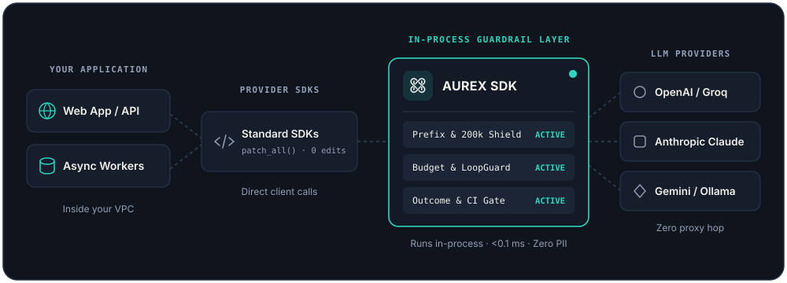

Stop AI Token Waste Before, During, and After Every LLM Call
aurex-sdk is an open-source, in-process Python and Node.js SDK that shields prompt caches, circuit-breaks runaway agent spend in real time, and gates Pull Requests on verified cost per completed task—with 0 ms proxy latency and zero raw prompts leaving your servers.
Why Aurex Exists: 23 Real-World GitHub Issues & Reddit Reports
Passive observability dashboards show yesterday's token bill after the money is gone, while proxy gateways add network hops and require routing sensitive prompts outside your VPC. Across frontier-lab SDK trackers and engineering forums, production teams hit six recurring cost traps:
- Silent cache invalidation & TTL rewrites: Changing a timestamp at character 20 or shuffling JSON tool keys wipes out 50%–90% prefix-cache discounts, while resuming an Anthropic session past 5 minutes triggers a
1.25xcache-write surcharge. - The 200k 2x pricing cliff & missing cloud spend caps: Sending
200,001input tokens to Claude 4+ or Gemini 2.5+ doubles the price of the entire request, and cloud budget alerts arrive hours after runaway spend. - Hidden reasoning tokens, agent loops & HTTP-200 soft failures: Reasoning models burn thousands of internal thinking tokens billed at output rates, nested retries multiply
429storms6x, and empty or whitespace-looped HTTP200 OKresponses still bill full price.
Number of Tracked Issues per Issue Label
Click any bar to filter the 23 linked GitHub issues and Reddit engineering threads below.
| Source & Link | Reported Problem | Labels | Aurex Fix |
|---|
What Aurex Does: One 3-Stage Pipeline Around Every Call
Instead of acting as a remote proxy, Aurex patches your installed provider SDKs directly in memory (<0.1 ms overhead) and connects three stages around every request:

Before the Call (Stage 1)
Deterministically sorts JSON keys in tools and schemas, hashes prompt layers to pinpoint the exact character index breaking your prefix cache, flags >5m Anthropic TTL gaps, and warns before crossing the 200,000-token 2x cliff. Any runtime hint appends at the tail so index 0 caches stay warm.
During the Call (Stage 2)
Isolates sessions via workflow_id, async context, or active OpenTelemetry trace_id; shares live session/minute dollar caps across workers via optional Redis; clamps hidden thinking budgets; injects stream_options.include_usage; logs aborted streams in try...finally; and raises AurexBlocked on loops.
After the Call + CI (Stage 3)
Classifies empty thinking-exhausted outputs and \n\n\n JSON grammar loops as unfulfilled_spend, joins spend with mark_success() to compute true cost per completed task, enforces per-tenant margin downgrades, and posts cost regression diffs on Pull Requests.
How to Use It (Step-by-Step)
Step 1: Install the SDK
pip install aurex-sdk
# Optional multi-worker Redis & OpenTelemetry extras:
pip install "aurex-sdk[redis,otel]"npm install aurex-sdk
# Optional multi-worker Redis & OpenTelemetry peers:
npm install ioredis @opentelemetry/apiStep 2: Initialize Once at Startup & Mark Task Outcomes
Keep your existing provider client calls unchanged. Aurex automatically strips workflow_id / workflowId and tags before requests hit the network wire so upstream APIs never return HTTP 400 validation errors.
from aurex_sdk import AurexAuditor, AurexBlocked, AurexConfig, patch_all
import openai
auditor = AurexAuditor(
AurexConfig(
redis_url=None, # Or "redis://localhost:6379/0" (also reads AUREX_REDIS_URL)
enable_loop_guard=True,
budget_guard={
"max_cost_per_session": 1.50,
"max_cost_per_minute": 15.00,
"max_context_tokens": 195000,
"max_thinking_tokens": 4096,
"on_budget_exceeded": "throw",
},
resilience={"enabled": True, "mode": "enforce", "max_attempts": 2},
)
)
patch_all(auditor)
client = openai.OpenAI()
try:
resp = client.chat.completions.create(
model="gpt-4o",
messages=[{"role": "user", "content": "Summarize support ticket #42."}],
workflow_id="ticket-42",
tags={"tenant_id": "acme-corp"},
)
auditor.mark_success("ticket-42")
except AurexBlocked as err:
print("Circuit breaker tripped:", err.reason)
finally:
auditor.flush()import { AurexAuditor, AurexBlocked } from "aurex-sdk";
import OpenAI from "openai";
const auditor = AurexAuditor.getInstance({
redisUrl: process.env.AUREX_REDIS_URL,
enableLoopGuard: true,
budgetGuard: {
maxCostPerSession: 1.5,
maxCostPerMinute: 15.0,
maxContextTokens: 195000,
maxThinkingTokens: 4096,
onBudgetExceeded: "throw",
},
resilience: { enabled: true, mode: "enforce", maxAttempts: 2 },
});
await auditor.patchAll();
auditor.instrument(OpenAI); // Bundler-safe hook for Next.js / Vite / Vitest
const client = new OpenAI();
try {
const resp = await client.chat.completions.create({
model: "gpt-4o",
messages: [{ role: "user", content: "Summarize support ticket #42." }],
workflowId: "ticket-42",
tags: { tenant_id: "acme-corp" },
} as any);
auditor.markSuccess("ticket-42");
} catch (err) {
if (err instanceof AurexBlocked) console.error("Circuit breaker tripped:", err.reason);
} finally {
await auditor.flushAndWait();
}Step 3: Audit Locally, Gate Pull Requests in CI, or Use Zero-Code Hook
# Inspect local ledger waste, cache breaks & cost_per_success
aurex audit
# Diff PR branch ledger against main baseline in GitHub Actions
aurex ci --ledger .aurex/ledger.jsonl --baseline main_ledger.jsonl --github-comment --fail-on-regression
# Optional zero-code startup hook (no application imports required)
aurex install-hook && AUREX_ENABLED=1 python app.py# Inspect local ledger waste, cache breaks & costPerSuccess
npx aurex audit
# Diff PR branch ledger against main baseline in GitHub Actions
npx aurex ci --ledger=.aurex/ledger.jsonl --baseline=main_ledger.jsonl --github-comment --fail-on-regression
# Optional zero-code startup hook
npx aurex install-hook && source .env.aurex && AUREX_ENABLED=1 node server.jsReal-World Testing: SWE-agent, LangGraph, Ollama & Gemini (8.6 / 10)
Aurex was evaluated end-to-end on SWE-agent autonomous coding trajectories using Google Gemini reasoning models (gemini-2.5-flash) and LangGraph multi-agent loops running local Ollama models (granite4.2:3b, llama3.1). Instead of tripping on the first failed file lookup, Aurex gave SWE-agent 3 exploration steps before blocking non-progressive repetition on Step 4—while recording streamed thought tokens and Zero-PII SHA-256 hashes. On real multi-file repository tasks (40k–120k context + 4k–16k reasoning tokens per turn), halting a stuck 30–50 step loop at Step 4 prevents 1.5M–5M+ wasted tokens per runaway run.
| Step | SWE-agent Action | Observation | Aurex Status |
|---|---|---|---|
| Step 1 | str_replace_editor view .../missing_colon.py |
File not found (wrong directory path) | Allowed |
| Step 2 | str_replace_editor view .../test-repo |
Listed folder structure to locate target file | Allowed |
| Step 3 | str_replace_editor view .../tests/missing_colon.py |
Read and displayed target source file | Allowed |
| Step 4 | 4th consecutive str_replace_editor without code diff |
Pattern ['str_replace_editor', 'str_replace_editor', 'str_replace_editor'] |
Blocked (AurexBlocked) |
| Evaluation Category | Score | Verdict |
|---|---|---|
| 1. Code Implementation (DX) | 9.0 / 10 | One-line patch_all(auditor) setup across LiteLLM, OpenAI, Gemini, and Ollama. |
| 2. Guardrails & Governance Features | 8.8 / 10 | Accurate streamed thought-token capture, 3-step exploration headroom, and hard USD caps. |
| 3. Log & Telemetry Clarity | 8.5 / 10 | Readable AurexBlocked reasons and structured Zero-PII .aurex/ledger.*.jsonl rows. |
| 4. Framework Resilience & Compatibility | 8.0 / 10 | <0.1 ms overhead across local Ollama ($0.00) and cloud APIs. |
| Composite Final Score | 8.6 / 10 | Production-ready & verified on real multi-agent workflows. |
Configuration, Providers & Typed Exceptions
Python uses snake_case keys while Node.js uses camelCase keys with identical behavior across both runtimes.
| Python / Node.js Key | Default | What It Controls |
|---|---|---|
max_cost_per_session / maxCostPerSession |
None |
Hard USD cap per workflow_id (downgrades at 80%, blocks with AurexBlocked at 100%). |
max_cost_per_minute / maxCostPerMinute |
None |
Sliding 60-second USD cap across calls (shared across pods when Redis is configured). |
max_context_tokens / maxContextTokens |
None |
Pre-call input cap; set to 195000 to stop requests before 200k 2x pricing cliffs. |
max_thinking_tokens / maxThinkingTokens |
None |
Clamps thinking.budget_tokens / Gemini thinking budgets and lowers reasoning_effort. |
on_budget_exceeded / onBudgetExceeded |
"warn" |
"warn" logs only; "throw" raises AurexBlocked; "webhook" posts an alert. |
enable_loop_guard / enableLoopGuard |
False |
Stops structural and semantic agent retry loops cleanly with AurexBlocked. |
cache_ttl / cacheTtl |
"5m" |
Anthropic cache-creation billing multiplier ("5m" = 1.25x, "1h" = 2.0x). |
redis_url / redisUrl |
env AUREX_REDIS_URL |
Enables RedisStateStore for multi-worker Gunicorn, Uvicorn, Celery, or Kubernetes pods. |
storage_mode / storageMode |
"file" |
"file" writes .aurex/ledger.jsonl; "memory" supports read-only containers. |
strict_provider_drift / strictProviderDrift |
env AUREX_STRICT_DRIFT=1 |
Raises AurexProviderDriftError in CI if an upstream SDK breaks internal layouts; production fails open. |
- Supported Providers: OpenAI (Chat, Structured
.parse(),.stream(), andresponsesAPI, plus automaticbase_urlpricing for Groq, Together AI, Fireworks, OpenRouter, and$0.00local Ollama), Anthropic Claude (5m/1hprompt caching,ThinkingBlock,>200k2x tiers), Google Gemini (sync &.aioasync,thoughts_token_count,>200k2x tiers), LiteLLM, Ollama, and Hugging Face. - Typed Exceptions & Health: Catch
AurexBlocked,AurexBudgetExceeded,AurexResilienceExhausted, andAurexProviderDriftError. Inspect live patch state anytime withauditor.get_health()/auditor.getHealth().
Data Storage & Zero-PII Architecture
Raw prompts and model responses are never transmitted to Aurex servers. By default, Aurex runs in 100% local mode with no API key required:
- Local-Only Mode (Default): Writes numeric token breakdowns, USD cost,
workflow_id,tenant_id, latency,outcome, and local one-way SHA-256 hashes (prompt_hash,system_prompt_hash,response_hash) to.aurex/ledger.jsonlon your own disk. - User-Owned Redis (Optional): When
AUREX_REDIS_URLis set, temporary sliding-window counters (aurex:session_cost:*,aurex:min_cost:*,aurex:prefix:*) stay inside your own Redis instance and auto-expire in120s–2h. - Opt-In Cloud Sync (When
AUREX_API_KEYis set): Transmits only operational cost metadata; SHA-256 prompt hashes are stripped before leaving the SDK unless explicitly enabled, and backend ingestion enforcesprompt=Noneandresponse=None.
Production Playbook & Contributing
- Move changing dates and IDs to the tail of prompts: Keep
messages[0]/systemstatic and setmax_context_tokens: 195000on Claude 4+ and Gemini 2.5+ pipelines so 50%–90% cache discounts stay warm and requests stop before the 2x cliff. - Scope LangGraph & multi-agent workflows: Wrap agent runs with
aurex_context.set({"workflow_id": run_id})(Python) oraurexContext.run({ workflowId }, ...)(Node.js) so sub-agents share one isolated session budget instead of falling back todefault_workflow. - Exclude
AurexBlockedfrom retry decorators: Passretry=retry_if_not_exception_type(AurexBlocked)intenacityso intentional blocks are never re-fired, and raiseloop_similarity_threshold(e.g.0.90–0.95) when coding agents need wider file-reading headroom on large repos. - Share state with Redis & gate PRs: Set
AUREX_REDIS_URL=redis://...in multi-worker Kubernetes or Gunicorn deployments and runaurex ci --fail-on-regressionin GitHub Actions.
Contributing
Contributions and provider adapter PRs are welcome! Fork bhav09/aurex-sdk, keep Python (sdk/python) and Node.js (sdk/node) changes in lockstep, verify with AUREX_STRICT_DRIFT=1 bash .agent/skills/aurex-smoke-test/scripts/run_smoke.sh, and open a Pull Request.